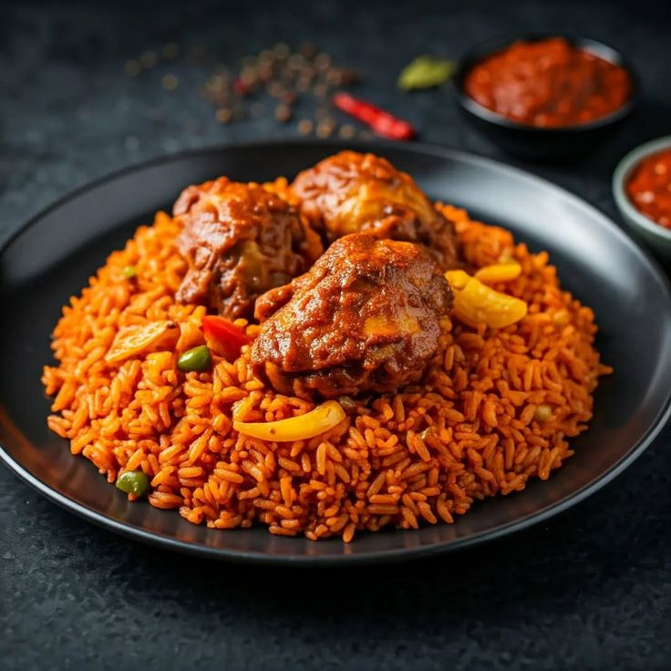

Jollof Rice Recipe

How To Prepare Party Jollof Rice
Ever wondered how that lovely smokey party jollof you see at weddings is made so tasty and spicy?
Today we will teach you how to prepare yours like a pro
Ingredients
- 3 cups of long grain rice
- 1 cup of palm oil
- 1 cup of tomato paste
- 2 cups of blended tomatoes, pepper and onions
- 2 tablespoons of thyme
- 2 tablespoons of curry powder
- 1 tablespoon of ginger and garlic paste
- Salt to taste
- Chicken or beef stock (optional)
Cooking Instructions
- Wash the rice thoroughly and soak it in water for about 30 minutes.
- In a large pot, heat the palm oil until it becomes clear.
- Add the blended tomatoes, pepper, and onions to the pot and cook until the mixture reduces and thickens.
- Add the tomato paste, thyme, curry powder, ginger and garlic paste, and salt. Stir well and let it cook for another 10 minutes.
- Add the soaked rice to the pot and mix well with the sauce.
- Add enough water or stock to cover the rice. Cover the pot and let it cook on low heat until the rice is done.
- Once cooked, fluff the rice with a fork and serve hot.
Back to Recipes